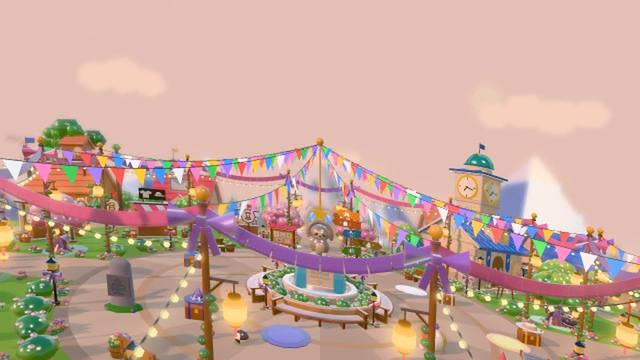
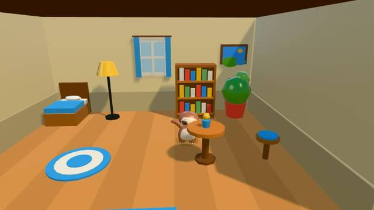

A game like Club Penguin, for kids today
From a former Club Penguin illustrator · October 2026
For a lot of grown-ups, Club Penguin was the first online world they called their own: a snowy island to waddle around, minigames that earned coins, an igloo to fill with furniture, and outfits to show off. Many of those players are parents now, looking for something like it for their own kids.
Sloth Jam is a free cozy island game that grew from the same ideas, made by Remi Couture, who drew for Club Penguin from 2006, through Disney’s purchase of the game.

What will feel familiar
- An island town to wander. Shops, a plaza, a harbor and beaches, with ten animal islanders who wave back and answer your emotes.
- Lots of minigames. 64 party games, a minute each, plus a kart race, table games and arcade cabinets.
- Coins and outfits. Earn coins by playing and dress up your sloth from a wardrobe of themed outfits, hats and accessories. Put on a whole costume and the town plays along.
- A home of your own. Your house on the lawn, with furniture to place and paint for the walls, and a bigger room to earn.
- Places to find. A coral reef, the Moon, a skatepark island, caves under the island and a pirate ship sailing round it.
- Pets. Kittens and puppies in town to pet and adopt.

What is different, on purpose
- Online play is off to start. Your child plays with kind computer players, or with family on the same device. Online play with other families is in early testing and stays off until a grown-up turns it on.
- Chat is even safer. Only kind words from a short list can be sent. Nothing can be typed, so no names, ages or numbers get through. Friends join by a picture code, never by searching.
- No membership wall. Every game is free while Sloth Jam is in early access. Optional founder packs give cosmetic rewards only. There are no ads and no loot boxes.
- No reading needed. Play is pictures and numbers with one stick and one button, so younger kids can play too.
- It plays alone, too. Everything works without anyone else online, so the island never feels empty.
Who is making it
Remi Couture was an illustrator on Club Penguin from 2006, through Disney’s purchase of the game, then worked on more than 13 children’s apps, for DreamWorks and BBC Kids among others. Sloth Jam is built by Remi alone, as Strategic Sloth, and the person who wrote the safety promises is the one answering your email at hello@slothjam.com. Remi talked about it on CBC Radio’s Daybreak South.
Sloth Jam is an independent game. It is not affiliated with or endorsed by Disney, and Club Penguin is a trademark of Disney.